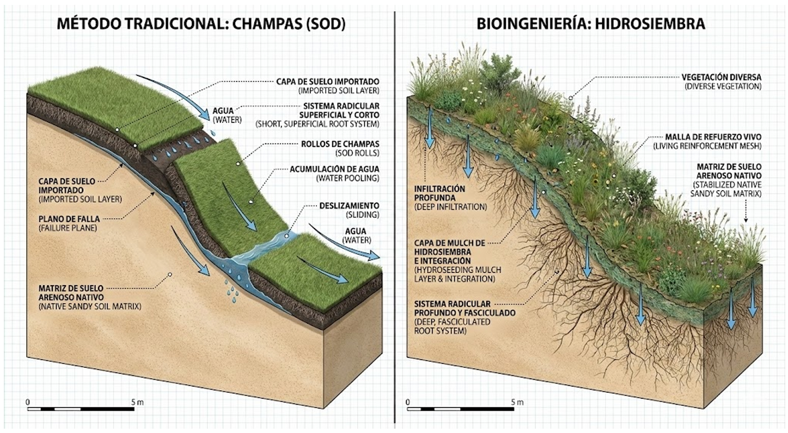
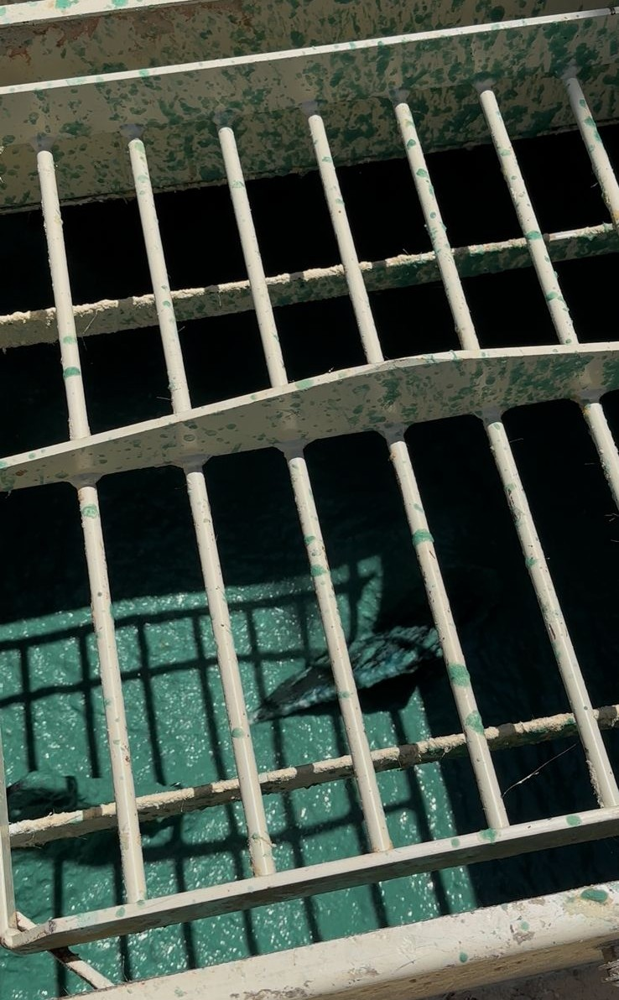
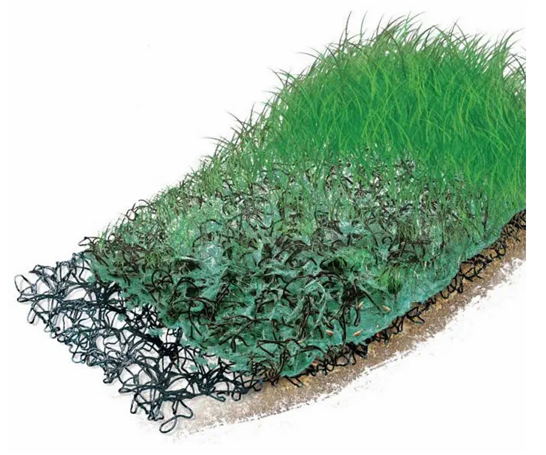

Una técnica mecanizada de estabilización biológica. Su principio operativo radica en la preparación y proyección a presión de una mezcla acuosa homogénea, diseñada para crear un microambiente transitorio y favorable para la germinación inmediata sobre el sustrato desnudo.
Esta técnica genera una discontinuidad física entre los tepes y el talud. Las raíces rara vez logran penetrar la matriz de arena con velocidad, provocando deslizamientos por pérdida de adherencia ante lluvias intensas, además de representar un riesgo ergonómico para los operarios.
Al ser proyectada a distancia, fuerza a la semilla a germinar in situ, desarrollando un sistema radicular denso y fasciculado que se entrelaza directamente con la matriz original. Esto garantiza un anclaje mecánico real y más profundo.


Conforma una matriz tridimensional que absorbe la energía de la lluvia y regula la temperatura generando un efecto micro-invernadero que disminuye la evaporación.
Actúan como micro-embalses que absorben el agua y la liberan lentamente hacia las raíces por presión osmótica, mitigando el estrés hídrico.
Poseen un fuerte efecto floculante que aglomera las partículas de arena. Inmovilizan los finos, evitando su lavado prematuro por escorrentía superficial.
Consorcio polifítico que combina especies pioneras de cobertura rápida con gramíneas perennes y leguminosas de anclaje profundo.
Cuando el esfuerzo de corte generado por la escorrentía supera la resistencia de la matriz base, se integra la hidrosiembra con una geomanta. Esta estructura de filamentos poliméricos actúa como una "jaula" de confinamiento inicial.
Al germinar, el sistema radicular crece a través de los filamentos, tejiendo la matriz artificial con la biológica y consolidando un refuerzo a largo plazo que incrementa significativamente la resistencia del talud frente a eventos erosivos severos.
